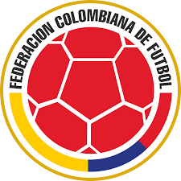
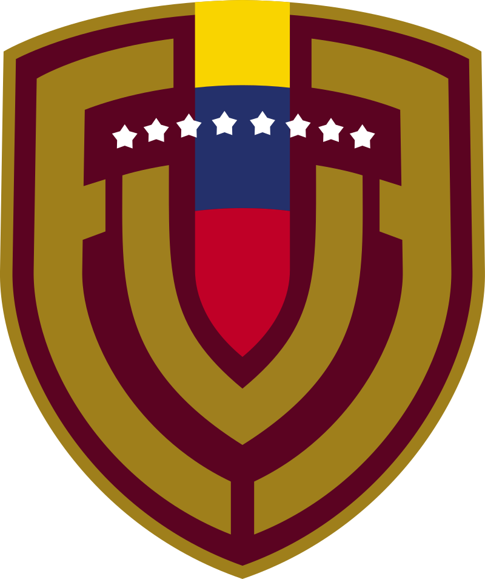

| EQUIPOS | PARTIDOS | PUNTOS | ESCUDOS |
|---|---|---|---|
| Colombia | 1 | 3 |  |
| Argentina | 1 | 3 |
|
| Brasil | 3 | 6 | |
| Venezuela | 1 | 0 |  |
| Eliminatoria mundial 2026 | |||
| LUGAR | VISITANTES (por año) | HOSPEDAJE | PLATO TÍPICO |
|---|---|---|---|
| Castillo de San Felipe de Barajas,Cartagena | 20.000 | San Lázaro Art  |
Pescado frito y arroz de coco .jpg) |
| Piedra del Peñol, Medellín | 950.000 | Los Recuerdos  |
Bandeja Paisa .jpg) |
| Santuario de la Lajas, Nariño | 750.000 | Casa de Peregrinos  |
Cuy asado .jpg) |
| Lugares que debes visitar | |||
| PAÍS | MEJORES PORTEROS | PENALES ATAJADOS | FOTOGRAFÍA | MEJOR PORTERO DE LA ELIMINATORIA |
|---|---|---|---|---|
Colombia |
Juan Carlos Henao |
25 penales atajados |
.jpg) |
.jpg) |
Argentina |
Emilio Martínez |
46 penales atajados |
|
|
Eslovenia |
Samir Handanovič |
38 penales atajados |
.jpg) |
|
México |
Oswaldo Sánchez | 25 penales atajados |
.webp) |
|
Brasil |
Diego Alves |
22 penales atajados |
.webp) |
|
| Resumen de eliminatoria | ||||